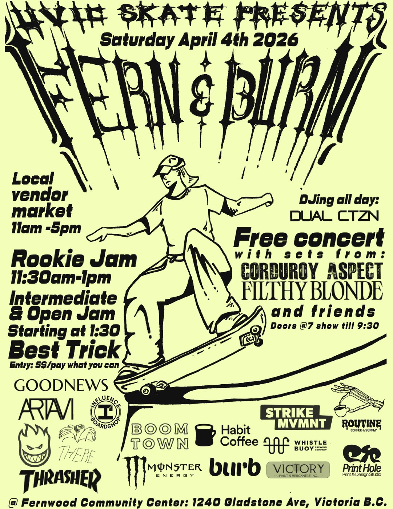
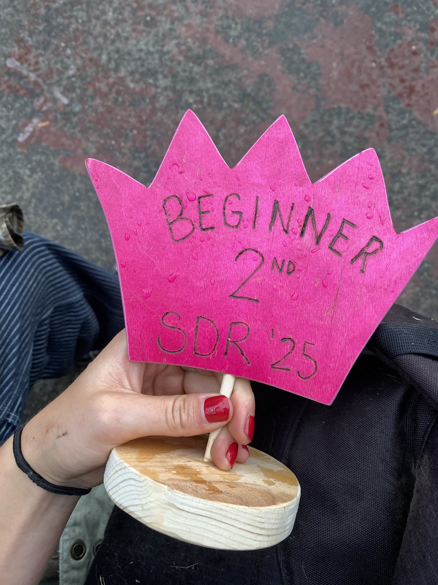
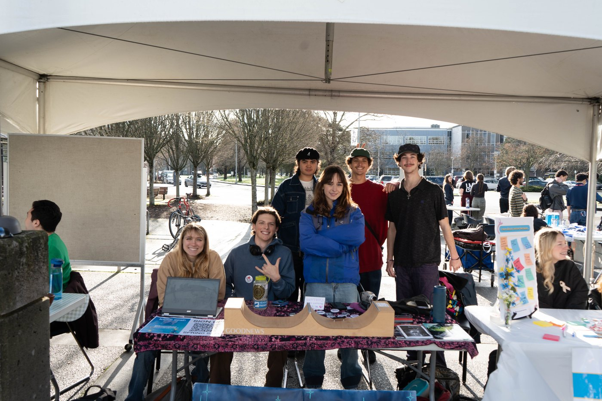
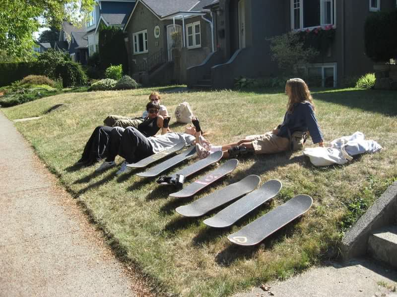
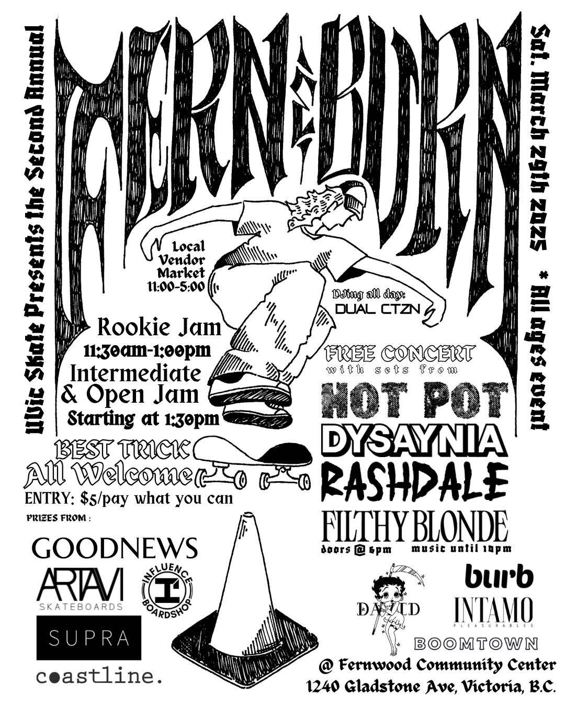
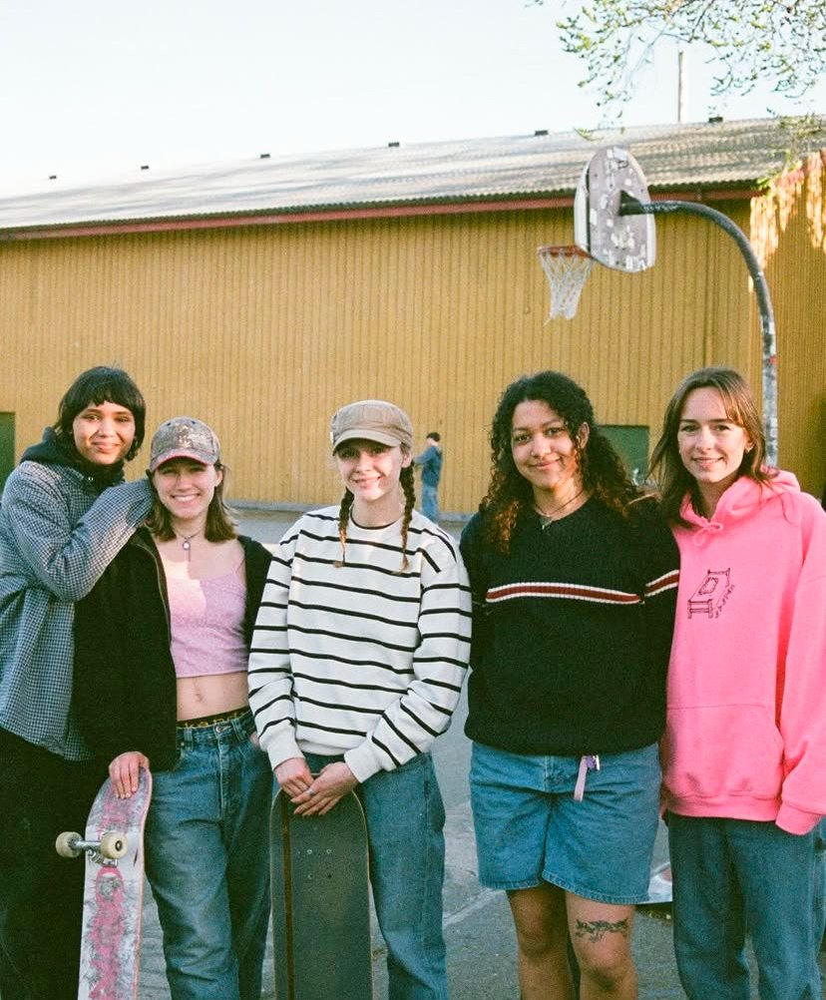
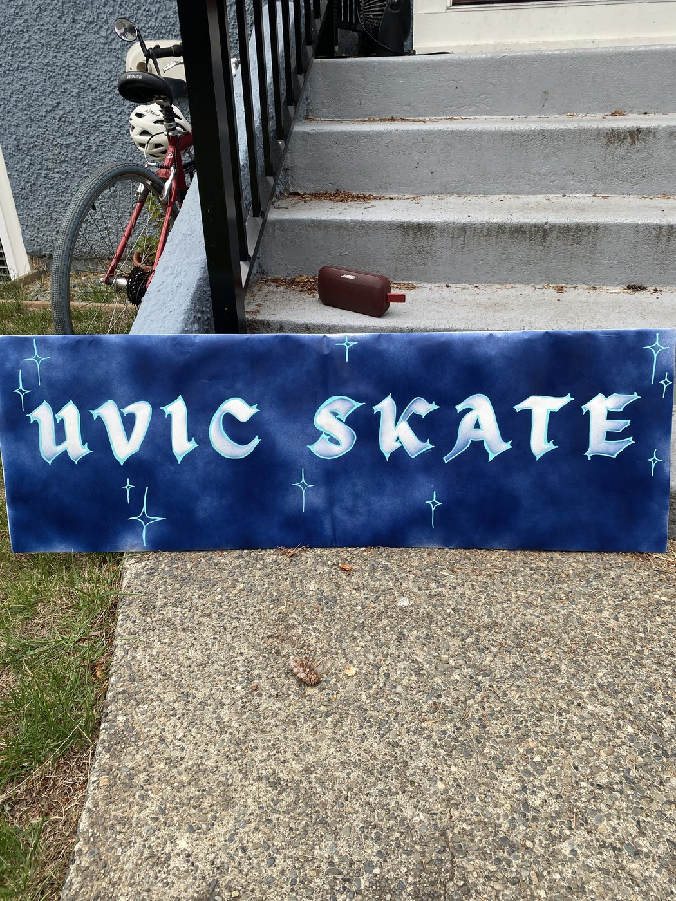
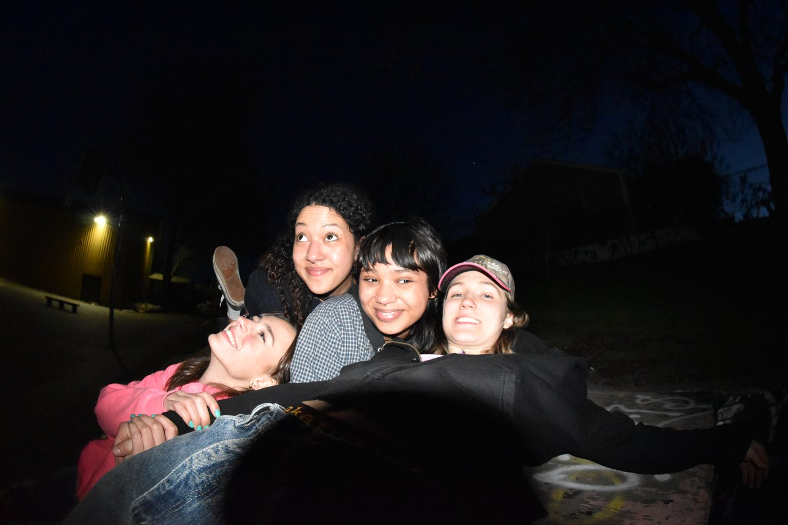
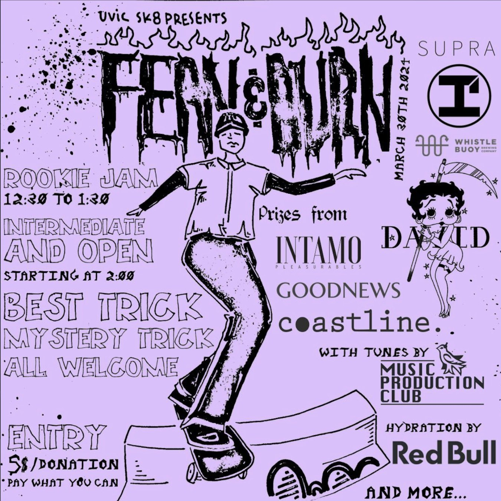
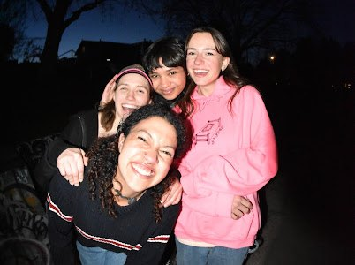

UVic Skate










UVic Skate is a skateboarding club that my friends and I started in 2023.
The club was founded with the goal of solidifying a stronger femme-led presence in the local skate scene, and as an excuse to go skate with our homies more often. Over the course of three years, we recruited hundreds of members, tons of community supporters, and a passionate team of executives.
In this way, we were able to successfully become the presence we wanted to see.
In this way, we were able to successfully become the presence we wanted to see.
As a club registered under UVSS at the University of Victoria, we received a limited amount of base funding and special project grants. Along with community donations and the support of local skate shops, we were able to provide free boards, gear, lessons, and skate seshes for members. Execs made all of this happen on a 100% volunteer basis, alongside their full-time studies.
As a club, we focused on being as inclusive and welcoming as possible. We made a point of engaging with those who were brand-new to the sport and offered a safe space to learn with the support of others.
As a club, we focused on being as inclusive and welcoming as possible. We made a point of engaging with those who were brand-new to the sport and offered a safe space to learn with the support of others.
We are lucky to be inspired by groups such as Stop Drop 'n Roll, Skate Like a Girl, and others in the community who work towards similar goals. Initiatives like this continue to make the sport of skateboarding ever better.
As a way to engage the greater community, UVic Skate organizes a skate competition and free concert held annually at the Fernwood Community Center. Although the founding members have graduated from UVic, Fern & Burn and UVic Skate will continue to be successfully run under the leadership of the new exec team.
We were able to partner with our friends at Goodnews Skateshop to create a custom deck, designed by myself and co-execs Mev and Lily.
$10 from each deck goes back to the club, directly supporting free events and gear for our skate community.
$10 from each deck goes back to the club, directly supporting free events and gear for our skate community.
xoxo, UVic Skate / Femmewheel University Shredsquad